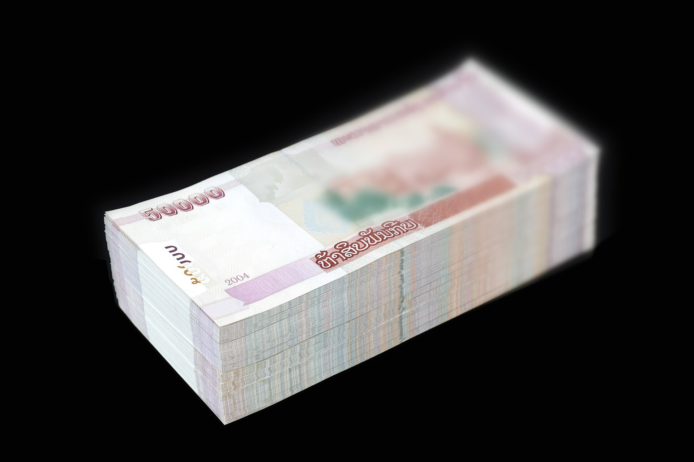

Assistant Prosecutor Detained Taking a $4,700 Bribe in Tashkent Region
Prosecutors say $12,000 was demanded in total. The person is presumed innocent until proven guilty by a court.

An assistant prosecutor of the Oqqoʻrgʻon district prosecutor's office in Tashkent region was detained while accepting a $4,700 bribe from a citizen, it was reported on 25 September.
How much
According to the investigation, the official demanded $12,000 in total; $4,700 was taken during the sting, and another $1,300 had reportedly been handed over earlier.
What was promised
A preliminary check indicates he promised to resolve a matter related to a car sale and to help obtain a preferential bank loan of 600 million soʻm.
Who exposed it
The operation was carried out jointly by the State Security Service (SSS/DXX) and the internal security department of the Prosecutor General's Office.
Important note
This is a detention and investigation stage; the person is presumed innocent until proven guilty by a court. The official's name has not been officially released.
In brief
- Who: an assistant prosecutor in Oqqoʻrgʻon district
- What: caught taking a $4,700 bribe
- Total demanded: $12,000 (plus $1,300 earlier)
- Promised: a car matter + a 600m soʻm preferential loan
Reported from Gazeta.uz, Spot.uz, Kun.uz and Zamin.uz.